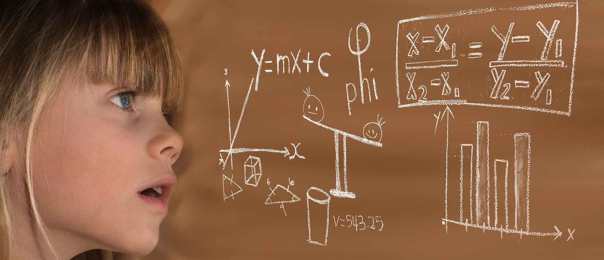

Welcome to CSM
Hours
Mon-Thurs: 10:00-16.00 Friday: 10:00-19:00 Saturday: 9:00-16:00 Sunday: 9:00-13:00
Location
The museum is located at: kanalveien 88
Admission
The entrance is free for all. There are guided tours of the museum that leave every hour. These tours are 70 NOK per person and include a handy printed guide of the museum. If you would like to organise a guided tour for your group of 6 or more people, please contact us to arrange the tour.
if you have any questions don´t hesitage to contact us here: